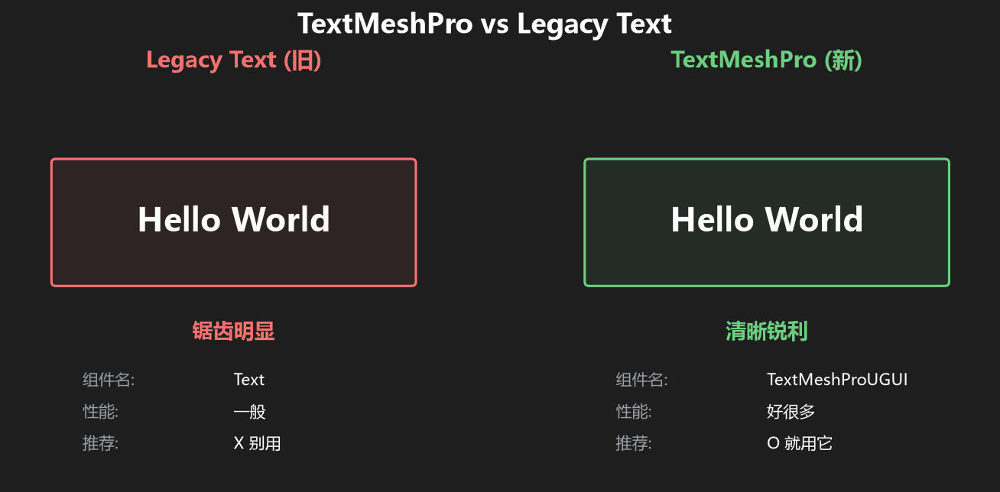
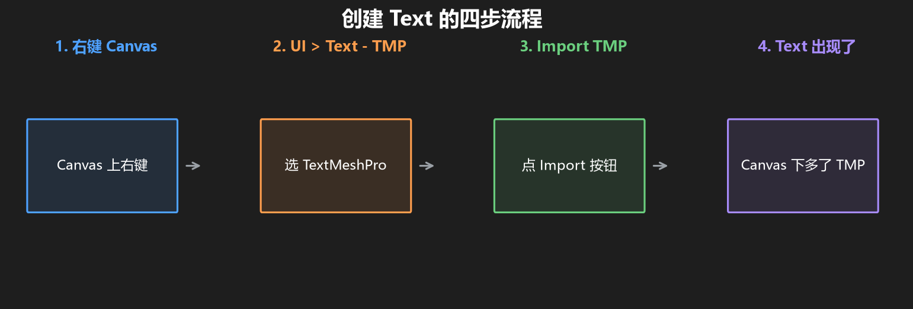
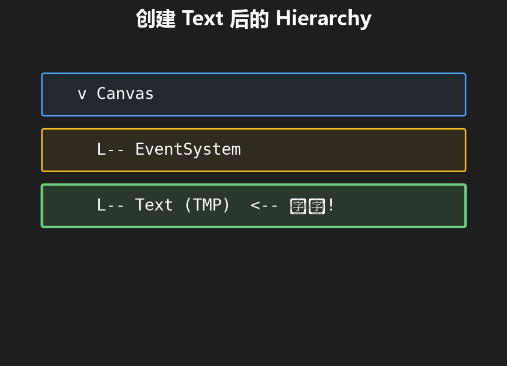
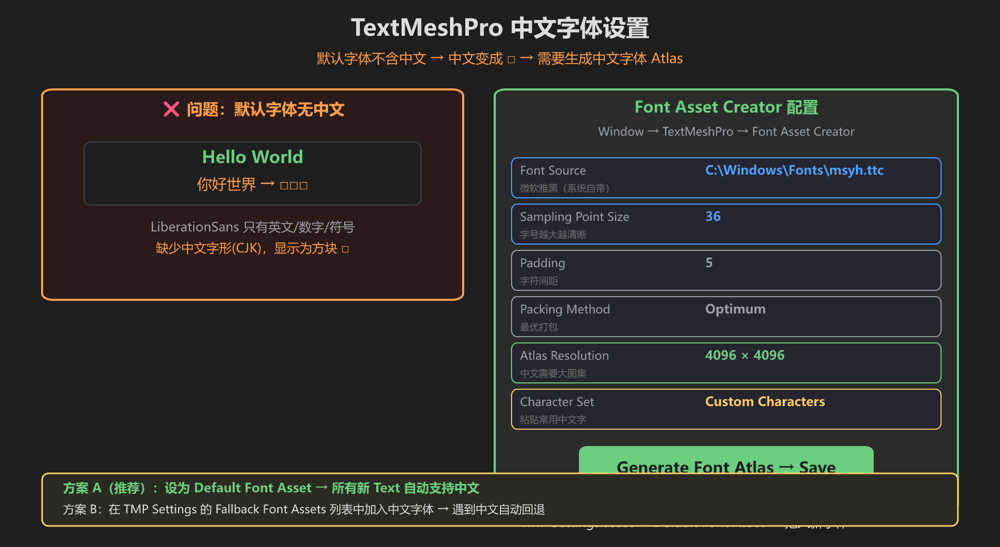
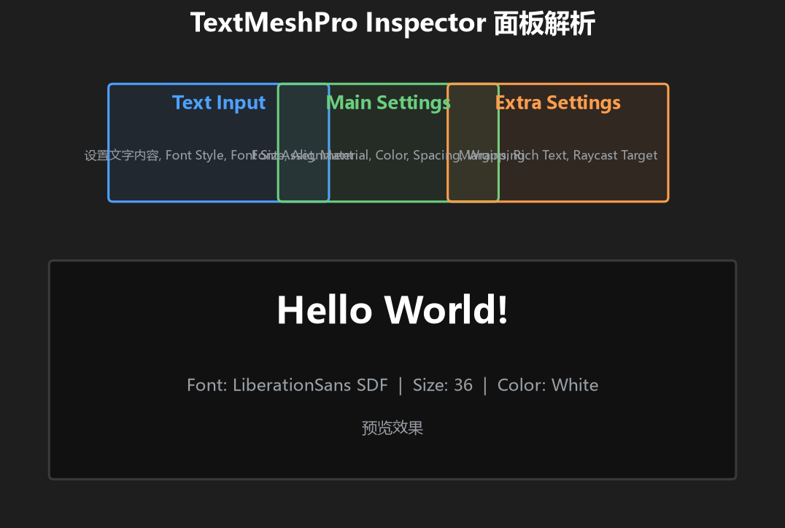
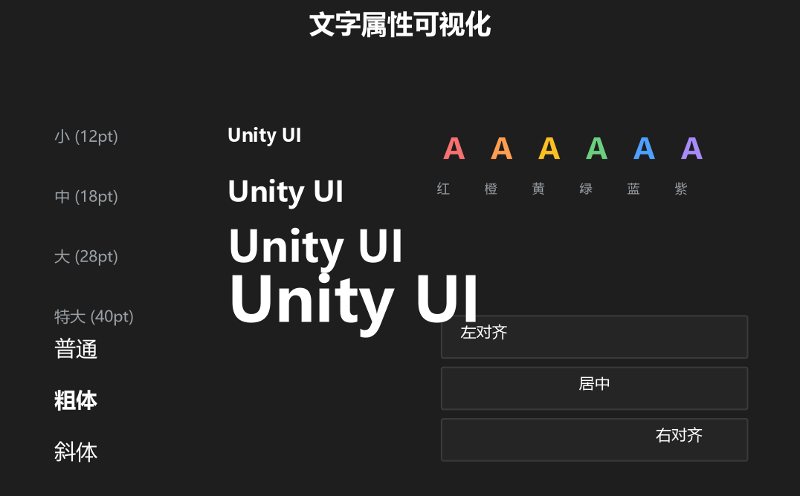
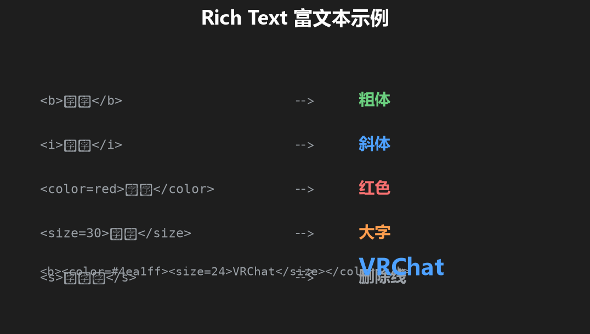

第 2 篇：在 Canvas 上放第一个文字
上一篇你做出了一个空白的 Canvas。这一篇我们让它真正显示点东西 — 一行文字。
1. 两套文字系统，选哪个？
Unity 有两套文字系统，我们只用新的那个。

图：TextMeshPro（新）全面优于 Legacy Text（旧）
| 对比 | Legacy Text（旧） | TextMeshPro（新） |
|---|---|---|
| 组件名 | Text | TextMeshPro - Text (UI) |
| 显示效果 | 锯齿明显 | 清晰锐利 |
| 性能 | 一般 | 好很多 |
| 功能 | 基础 | 富文本、渐变、描边等 |
| 推荐 | 别用了 | 就用它 |
记住：菜单里叫「Text - TextMeshPro」。选这个，不要选普通的「Text」。
2. 创建你的第一个文字

图：创建 TextMeshPro 文字的四步流程
步骤
- 在 Hierarchy 里选中 Canvas（这样新建的文字会自动成为 Canvas 的子级）
- 顶部菜单：
GameObject→UI→Text - TextMeshPro - 弹窗问「Import TMP Essentials」→ 点 Import TMP Essentials
- 导入完成后，Canvas 下面会多出一个
Text (TMP)物体

图：创建 Text 后的 Hierarchy 结构
此时 Game 视图里你应该能看到一行小字 New Text。
⚠️ 输入中文变成 □？
TMP 默认字体 LiberationSans 只含英文和数字，没有中文字形。输入中文会显示为方块 □。

用 Font Asset Creator 生成中文字体 Atlas，然后设为默认
VRChat 有更省事的办法：按 VRChat 官方手册建议，去 Project Settings → TextMesh Pro → Settings，把 Fallback Font Assets 清空。这样发布后 VRChat 会用自己的内置后备字体渲染几乎所有 Unicode 字符，中文字符一般就不会再显示成 □ 了。这个方案推荐优先用，它能避免打包体积膨胀。
如果你需要完全统一的中文字体外观，再按下面的步骤生成自定义字体 Atlas。注意：
- Atlas Resolution 越大、字符越多，下载体积和内存占用越大
- 不要无脑导入全部中文，只放你界面里真正用到的字
- VRChat 世界优化时，字体资源是常见的体积来源
操作步骤
- Window → TextMeshPro → Font Asset Creator
- Font Source 选
C:\Windows\Fonts\msyh.ttc（微软雅黑） - Atlas Resolution 设 4096×4096（中文需要大图集）
- Character Set 选 Custom Characters，粘贴常用中文字
- 点 Generate Font Atlas → Save 到 TMP 的 Fonts 目录
设为默认：打开 TMP Settings.asset，把新生成的字体拖到 Default Font Asset 字段。之后所有新建的 Text 都自动使用这个字体。
常用中文字符列表
复制下面这段粘贴到 Custom Character List：
的一是了我不人在他有这个上们来到时大地为子中你说生国年着就那和要她出也得里后自以会家可下而过天去能对小多然于心学么之都好看起发当没成只如事把还用第样道想作种开手十方期物从些现其与又意进经门前实度理气二等高回情最明长力头文定行主法工全本记东者3. Inspector 面板解析

图：TextMeshPro 的 Inspector 面板分为三个主要区域
选中 Text (TMP)，看 Inspector，主要关注这几个地方：
| 区域 | 作用 | 常用设置 |
|---|---|---|
| Text Input | 写文字内容 | 改文字、调字号、对齐方式 |
| Main Settings | 字体和外观 | Font Asset（字体）、Color（颜色） |
| Extra Settings | 高级选项 | Rich Text（富文本开关） |
4. 文字属性速览

图：字号、颜色、对齐、字体的可视化效果
最常用的调整：
- 改文字：直接在 Text Input 框里输入你想显示的内容
- 改字号：调 Font Size 数字，越大字越大
- 改颜色：点 Vertex Color 旁边的颜色块
- 改对齐：点 Alignment 那一排按钮（左对齐/居中/右对齐）
5. Rich Text 富文本
TextMeshPro 支持 Rich Text（富文本），可以在文字里嵌入格式标记：

图：常用 Rich Text 标签及效果
常用标签速查：
<b>粗体</b> → 粗体
<i>斜体</i> → 斜体
<color=red>红字</color> → 红字
<size=30>大字</size> → 大字Rich Text 需要 Extra Settings 里的 Rich Text 勾选上才能生效（默认是勾上的）。
6. 练手时间
目标：在 Canvas 上显示一行「你好，VRChat！」，红色、36号字、居中。
步骤
- 选中 Canvas → 创建
Text - TextMeshPro - 把 Text Input 里的文字改成
你好，VRChat！ - Font Size 改成
36 - Vertex Color 改成红色
- Alignment 选居中
- 如果中文显示 □，按上面「中文字体」章节操作
自检清单
- [ ] Game 视图里能看到文字
- [ ] 中文正常显示，不是 □
- [ ] 文字是红色的
- [ ] 文字居中显示